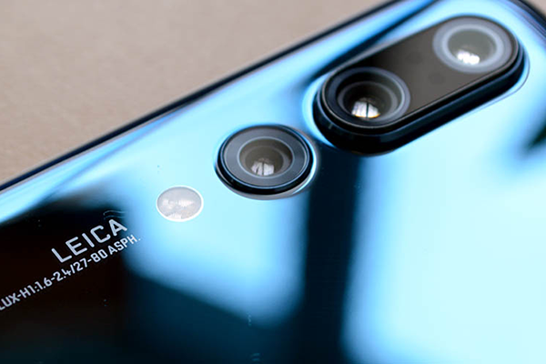
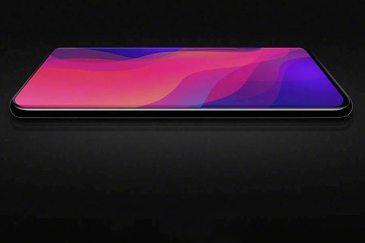
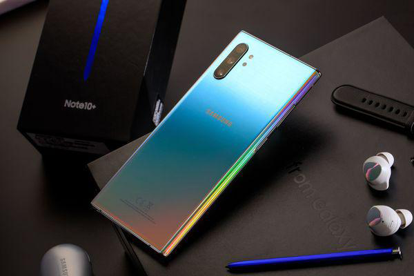

超強3鏡頭 -捕捉精采生活
配備2500萬超強3鏡頭，隨時捕捉生活中的點點滴滴。2500萬畫素主鏡頭記錄日常細節；800萬畫素超大廣角鏡頭，超越你的視野極限；500萬畫素景深鏡頭能虛化背景並擁有景深特效，拍照後還能調整柔焦/旋轉/縮放/抽色，輕鬆聚焦重點主題。錄影模式下支援濾鏡效果及8段美肌功能，圈粉直播、LIVE生活，隨時耀眼。
高屏占比全螢幕
配備高屏占比6.4吋V極限全螢幕，突破視野極限，帶來卓越的視覺感受。無論觀看影片、暢玩遊戲或進行直播，以絕佳的螢幕比例帶來身歷其境的觀賞體驗。
冰晶感背蓋設計
獨特冰晶感格紋設計，運用幾何線條搭配3D類玻璃材質，呈現絕佳握感與時尚質感，讓你輕鬆掌握行動生活。Galaxy A30s共推出冰晶白、冰晶黑與冰晶綠三款顏色供你選擇。
螢幕指紋辨識
螢幕指紋辨識功能，自動識別和驗證你的指紋，不僅個人資料得到全面保護，當需要時也能適時登入，解鎖一指輕鬆搞定。